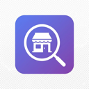
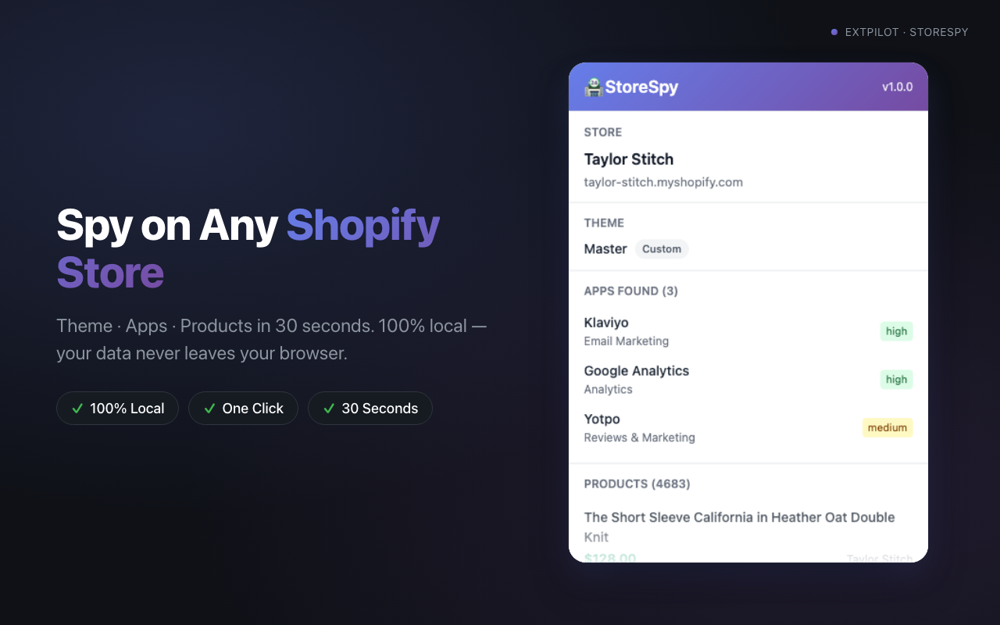

Free — 3 store analyses per dayStoreSpy — Shopify Theme & App Detector
Detect any Shopify store's theme, apps, and real product count in 30 seconds. 100% local. Never goes down.
Pro from $3.9/mo or $14.9 lifetime — unlimited analyses + CSV export
StoreSpy is a free Chrome and Edge extension that detects which Shopify theme, apps, and total product count any Shopify store is using — entirely in your browser, no signup, no server upload. It identifies 32 popular Shopify apps via DOM, script, and style fingerprints (Klaviyo, Yotpo, Loox, PageFly, Judge.me, Recharge, Gorgias and more), classifies the theme into Custom / Based on Dawn / Official Dawn / Refresh / Sense, and reads the real product total from /collections/all.json instead of being fooled by Shopify's 250-per-page sampling cap that limits competitors.
Tested on real stores: taylor-stitch.com (4,683 products), negativeunderwear.com (1,544 products), skinnydiplondon.com. Each app detection comes with a confidence score (high / medium / possible).
- Free: 3 store analyses per day, 5 detected apps, 1 sample product, no CSV export
- Pro Lifetime: $14.9 one-time — unlimited analyses, all apps, full product list, CSV export, no Free footer
- Pro Monthly: $3.9/month — same as Lifetime, billed monthly, cancel anytime
- 100% local: stores you analyze are never sent to any server — we have no backend, no analytics on store data, no account system
- Permissions: only
storage,activeTab,scripting— no broad host access, no webRequest, no cookies

What StoreSpy Detects
Store Info
Shop name and myshopify domain via 5-layer fallback (window.Shopify, vendor meta, og:site_name, title, hostname). Works on every public Shopify store, including custom domains.
Theme & Dawn Lineage
Theme name plus smart classification: Custom, Based on Dawn, Official Dawn, Refresh, or Sense — based on CSS variables and class prefix thresholds.
32 Apps with Confidence Levels
Detects Klaviyo, Loox, Judge.me, PageFly, Recharge, Gorgias and 26 more. Each result is labeled high (green), medium (yellow), or possible (gray) confidence.
Real Product Count
Reads the true total from /collections/all.json. No paginated guesswork, no 250/page sampling trap. Stores beyond 750 products show as 750+.
100% Local
All analysis runs inside your browser. The stores you analyze are never uploaded. Only license verification calls our server (Free users: zero network calls).
CSV Export (Pro)
One click exports Store, Theme, Apps, and Products to CSV. Ready for Google Sheets, Excel, or your own competitive intelligence pipeline.
How It Works
Install StoreSpy (free)
Add to Chrome or Edge in one click. No signup, no email, no account setup.
Open any Shopify store
Browse to a Shopify-powered store. The icon lights up automatically when a Shopify site is detected.
Click the StoreSpy icon
The popup runs the analysis locally. Within ~2 seconds you see the store, theme, apps, and real product count.
Export to CSV (Pro)
One click pulls all four dimensions into a CSV file ready for analysis. Free tier shows the data on screen.
Who Is StoreSpy For
Shopify Sellers & DTC Operators
Spotted a competitor's store doing well? Reverse-engineer their theme + app stack to plan your own growth playbook.
Theme & App Developers
Doing market research before building? See which Dawn variants and which apps are actually shipping in the wild.
Dropshippers & Product Researchers
Validate winning products by seeing real catalog size (not the 250-cap sample) and which apps power the conversion funnel.
Free vs Pro
| Feature | Free | Pro |
|---|---|---|
| Daily analyses | 3 per day | Unlimited |
| Detected apps shown | First 5 | All |
| Product list | 1 sample + total count | Full sampled list (up to 750) |
| Theme detection (Dawn lineage) | Yes | Yes |
| Real product total | Yes | Yes |
| CSV export | — | Yes |
| 24-hour local cache | Yes | Yes |
Frequently Asked Questions
Is there a free Chrome extension to detect Shopify themes and apps?
Yes. StoreSpy is a free Chrome extension that detects any Shopify store's theme, installed apps, and real product count. Free users get 3 store analyses per day. Pro ($3.9/month or $14.9 lifetime) removes the limit and unlocks all detected apps, the full product list, and CSV export.
What apps does this Shopify store use?
StoreSpy recognizes 32 popular Shopify apps via DOM, JavaScript globals, script URLs, and CSS class fingerprints — including Klaviyo, Loox, PageFly, Judge.me, Recharge, and Gorgias. Each detection is labeled with a confidence level: high, medium, or possible.
How can I tell which theme a Shopify store is built with?
Click the StoreSpy icon on any Shopify store. StoreSpy reads the theme name and classifies it into Custom, Based on Dawn, Official Dawn, Refresh, or Sense. Heavily customized themes that no longer match Dawn-family signatures show as Custom.
Does StoreSpy upload the stores I analyze to a server?
No. StoreSpy is 100% local — all analysis happens inside your browser. The stores you analyze are never sent to any server. The only network call StoreSpy makes is to verify your Pro license key (Free users have zero network calls related to analysis).
How do I find the total number of products on a Shopify store?
StoreSpy reads the real product total from the store's /collections/all.json endpoint. Unlike tools that paginate and get fooled by Shopify's 250-per-page sampling cap, StoreSpy shows the true count. Stores with more than 750 products display as 750+.
How is StoreSpy different from Koala Inspector or PPSpy?
Koala Inspector and PPSpy depend on cloud servers — when their backend goes down, you lose access. StoreSpy runs fully locally, so it never goes down and never sends the stores you analyze to a third party. StoreSpy is also significantly cheaper: $14.9 lifetime vs $9–$29/month for typical competitors.
Do I need to sign up or create an account?
No. StoreSpy requires zero signup. Install it from the Chrome Web Store and start analyzing stores immediately. There is no email, no account, no login. For Pro, you receive a license key after Stripe checkout and paste it into the extension.
Does StoreSpy work in Edge?
Yes. StoreSpy is available on the Chrome Web Store and Microsoft Edge Add-ons. Firefox is not currently supported due to Manifest V3 differences.
Support
Have questions, feedback, or need help? We'd love to hear from you.
Email: support@extpilot.com